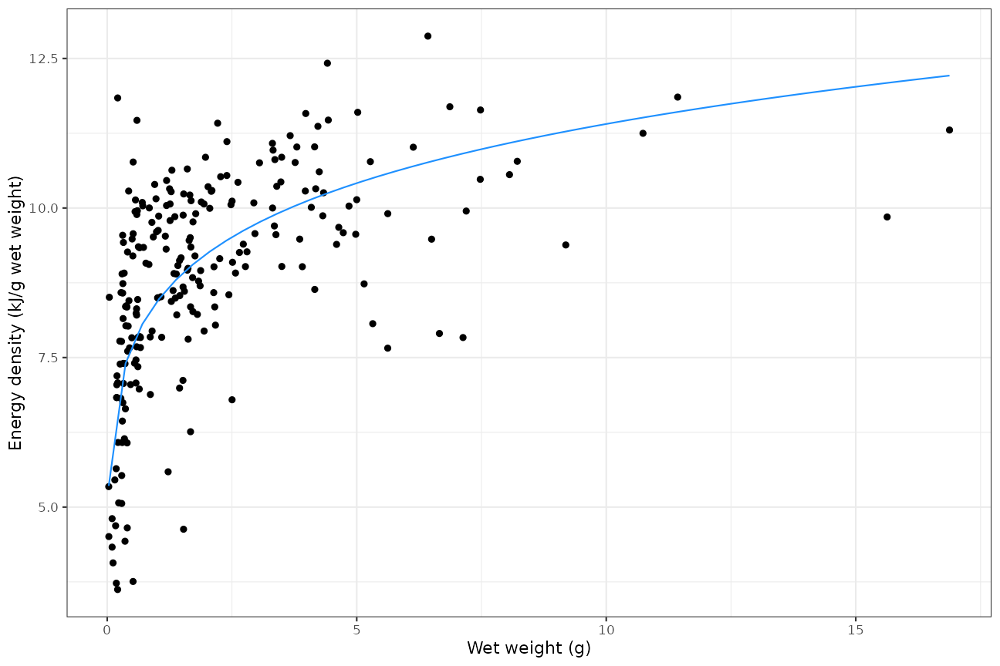

Southen Ocean Diet and Energetics Data
Ben Raymond
2018-06-20
Overview
This R package provides access to the SCAR Southern Ocean Diet and Energetics Database, and some tools for working with these data. For more information about the database see http://data.aad.gov.au/trophic/.
Usage
Basic usage: load the desired dataset using so_isotopes(), so_energetics(), so_lipids(), so_dna_diet(), or so_diet().
Examples
library(sohungry)
library(dplyr)
library(tidyr)
library(ggplot2)Isotopes
Load the stable isotope data, in measurement-value format (one row per measurement):
xi <- so_isotopes(format = "mv")Filter to taxon of interest, selecting d13C and d15N records:
xi %>% dplyr::filter(taxon_name == "Electrona carlsbergi" & measurement_name %in% c("delta_13C", "delta_15N"))## # A tibble: 4 x 50
## record_id source_id original_record_id location west east south north
## <int> <int> <chr> <chr> <dbl> <dbl> <dbl> <dbl>
## 1 1663 8 Raymond et al. RE~ Kerguele~ 71.2 72.2 -49.3 -49.1
## 2 1663 8 Raymond et al. RE~ Kerguele~ 71.2 72.2 -49.3 -49.1
## 3 483 12 Raymond et al. RE~ East of ~ 70.3 70.3 -49.4 -49.4
## 4 483 12 Raymond et al. RE~ East of ~ 70.3 70.3 -49.4 -49.4
## # ... with 42 more variables: observation_date_start <dttm>,
## # observation_date_end <dttm>, altitude_min <chr>, altitude_max <chr>,
## # depth_min <int>, depth_max <int>, taxon_name <chr>,
## # taxon_name_original <chr>, taxon_aphia_id <int>,
## # taxon_worms_rank <chr>, taxon_worms_kingdom <chr>,
## # taxon_worms_phylum <chr>, taxon_worms_class <chr>,
## # taxon_worms_order <chr>, taxon_worms_family <chr>,
## # taxon_worms_genus <chr>, taxon_group_soki <chr>,
## # taxon_breeding_stage <chr>, taxon_life_stage <chr>, taxon_sex <chr>,
## # taxon_sample_count <int>, taxon_sample_id <int>,
## # isotopes_pretreatment <chr>, isotopes_are_adjusted <chr>,
## # isotopes_adjustment_notes <chr>, isotopes_carbonates_treatment <chr>,
## # isotopes_lipids_treatment <chr>, isotopes_body_part_used <chr>,
## # measurement_name <chr>, measurement_min_value <chr>,
## # measurement_max_value <chr>, measurement_mean_value <dbl>,
## # measurement_variability_value <dbl>,
## # measurement_variability_type <chr>, measurement_units <chr>,
## # measurement_method <chr>, is_secondary_data <chr>, quality_flag <chr>,
## # notes <chr>, last_modified <dttm>, source_details <chr>,
## # source_doi <chr>Diet
Load the diet data (stomach content analyses and similar):
x <- so_diet()A summary of what Electrona carlsbergi eats:
x %>% filter_by_predator_name("Electrona carlsbergi") %>% diet_summary(summary_type = "prey")| Prey | N fraction diet by weight | Fraction diet by weight | N fraction occurrence | Fraction occurrence | N fraction diet by prey items | Fraction diet by prey items |
|---|---|---|---|---|---|---|
| Euphausia superba (Antarctic krill) | 0 | 1 | 0.02 | 2 | 0.00 | |
| Chaetognatha (arrow worms) | 1 | 0.10 | 0 | 1 | 0.33 | |
| Copepoda (copepods) | 0 | 8 | 0.05 | 29 | 0.04 | |
| Crustacea (crustaceans) | 1 | 0.11 | 1 | 0.41 | 1 | 0.15 |
| Euphausiids (other krill) | 2 | 0.32 | 6 | 0.10 | 17 | 0.04 |
| Fish | 1 | 0.12 | 0 | 0 | ||
| Heterorhabdidae | 0 | 1 | 0.01 | 1 | 0.00 | |
| Hyperiidea (hyperiid amphipods) | 1 | 0.41 | 2 | 0.20 | 8 | 0.04 |
| Malacostraca (class of crustaceans) | 4 | 0.01 | 1 | 0.20 | 3 | 0.08 |
| Maxillopoda (class of crustaceans) | 1 | 0.04 | 2 | 0.10 | 2 | 0.24 |
| Salps | 0 | 1 | 0.20 | 4 | 0.05 | |
| Uncategorized group | 2 | 0.38 | 2 | 0.41 | 2 | 0.30 |
And what eats Electrona carlsbergi:
x %>% filter_by_prey_name("Electrona carlsbergi") %>% diet_summary(summary_type = "predators")| Predator | N fraction diet by weight | Fraction diet by weight | N fraction occurrence | Fraction occurrence | N fraction diet by prey items | Fraction diet by prey items |
|---|---|---|---|---|---|---|
| Aptenodytes patagonicus (king penguin) | 1 | 0.08 | 10 | 0.24 | 2 | 0.00 |
| Arctocephalus spp. (Antarctic and subantarc | 19 | 0.00 | 33 | 0.05 | 13 | 0.03 |
| Champsocephalus gunnari (mackerel icefish) | 0 | 3 | 0.00 | 3 | 0.00 | |
| Dissostichus spp. (toothfish) | 0 | 2 | 0.01 | 2 | 0.00 | |
| Eudyptes chrysocome (rockhopper penguin) | 0 | 3 | 0.05 | 3 | 0.00 | |
| Eudyptes chrysolophus (Macaroni penguin) | 0 | 1 | 0.06 | 0 | ||
| Eudyptes schlegeli (royal penguin) | 1 | 0.10 | 4 | 0.20 | 4 | 0.01 |
| Mirounga leonina (southern elephant seals) | 0 | 5 | 0.09 | 0 | ||
| Pygoscelis papua (gentoo penguin) | 1 | 0.28 | 3 | 0.18 | 1 | 0.49 |
| Diomedeidae (albatrosses) | 3 | 0.00 | 5 | 0.03 | 3 | 0.00 |
| Onychoteuthidae (hooked squid) | 1 | 0.07 | 1 | 0.15 | 1 | 0.04 |
| Otariidae (eared seals) | 0 | 1 | 0.04 | 0 | ||
| Phalacrocoracidae (cormorants) | 0 | 6 | 0.01 | 6 | 0.00 | |
| Procellariidae (procellariid seabirds) | 13 | 0.01 | 29 | 0.08 | 23 | 0.00 |
Energetics
xe <- so_energetics()Select all single-individual records of Electrona antarctica:
edx <- xe %>% dplyr::filter(taxon_sample_count == 1 & taxon_name == "Electrona antarctica")
## discard the dry-weight energy density values
edx <- edx %>% dplyr::filter(measurement_units != "kJ/gDW")
## some data manipulation
edx <- edx %>%
## remove the spaces from the measurement names, for convenience
mutate(measurement_name = gsub("[[:space:]]+", "_", measurement_name)) %>%
## convert to wide format
dplyr::select(source_id, taxon_sample_id, measurement_name, measurement_mean_value) %>%
tidyr::spread(measurement_name, measurement_mean_value)
## what does this look like?
edx## # A tibble: 197 x 8
## source_id taxon_sample_id dry_weight energy_content standard_length
## <int> <int> <dbl> <dbl> <dbl>
## 1 64 37 1.20 8.64 70.0
## 2 64 38 0.00670 5.34 15.0
## 3 64 39 0.00675 4.51 16.0
## 4 64 40 0.600 6.79 58.0
## 5 64 41 0.307 7.84 47.0
## 6 64 42 0.498 8.35 56.0
## 7 64 43 1.52 8.73 77.0
## 8 64 44 2.87 9.38 90.0
## 9 64 47 0.0890 3.76 37.0
## 10 64 48 0.396 7.12 53.0
## # ... with 187 more rows, and 3 more variables: total_length <dbl>,
## # water_content <dbl>, wet_weight <dbl>Plot the wet weight against wet-weight energy density:
p <- ggplot(edx, aes(wet_weight, energy_content))+geom_point()+theme_bw()+
labs(x = "Wet weight (g)", y = "Energy density (kJ/g wet weight)")
plot(p)
Fit an allometric equation:
fit <- lm(log(energy_content)~log(wet_weight), data = edx)
px <- tibble(wet_weight = seq(from = min(edx$wet_weight), to = max(edx$wet_weight), length.out = 51))
px$energy_content <- exp(predict(fit, newdata = px))
p+geom_path(data = px, colour = "dodgerblue")
Lipids and fatty acids
xl <- so_lipids()Select lipid-class data from Connan et al. (2007), and plot similar to Figure 2 from that paper:
xl <- xl %>% dplyr::filter(source_id == 126 & measurement_class == "lipid class") %>%
mutate(measurement_name = sub(" content", "", measurement_name)) ## tidy the names a little
ggplot(xl,
aes(measurement_name, measurement_mean_value, fill = taxon_life_stage, group = taxon_life_stage))+
geom_col(position = "dodge")+theme_bw()+
labs(x = "Lipid class", y = "Percentage of lipids")